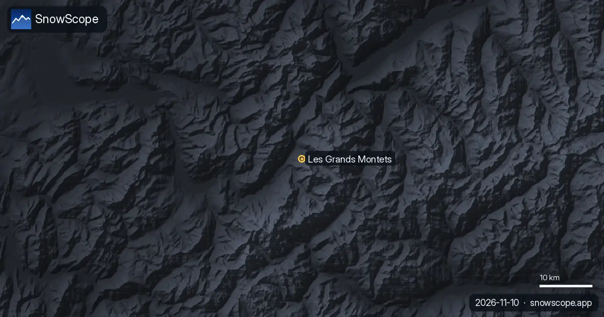

St. Moritz von A bis Z: ein kleines Corviglia-Glossar, mit dem Schnee hinter jedem Wort
St. Moritz hat sein eigenes Vokabular. Schon am ersten Morgen hört man Chantarella, Marguns oder Piz Nair und nickt höflich. Dieses Glossar erklärt die Wörter in der Reihenfolge, in der man ihnen begegnet, und ergänzt, was unsere Schneehistorie, ein Modell von 46 vergangenen Wintern, über die Höhe sagt, für die jedes Wort steht.
Die Live-Schneeprognose für Corviglia in der SnowScope-AppSchneehöhen, Pulverschnee-Alarme und 3D-Karte, gratis.
Engadin
Das Hochtal in Graubünden, in dem St. Moritz auf etwa 1.800 m liegt. Höhe ist das Thema dieses ganzen Glossars: Schon der Talboden liegt höher als manches Skigebiet der Alpen oben. Unser tiefster Punkt für die Corviglia auf 1.733 m hat trotzdem nur einen üblichen Höchststand von etwa 60 cm; das Tal ist ein Ausgangspunkt, keine Schneegarantie.

Chantarella
Die Mittelstation der Standseilbahn von St. Moritz auf die Corviglia. Ein nützliches Wort, denn hier beginnt der Schritt von der Stadt zum Berg. Darüber ändert sich der Schnee schnell.
Corviglia
Der Skiberg selbst, an den Osthängen des Piz Nair über dem Ort, auf 2.486 m. Unser mittlerer Punkt liegt ganz nah, auf 2.377 m. Dort hat ein typischer Winter etwa 52 cm Schnee im Dezember, 82 cm im Januar, 98 cm im Februar, 105 cm im März und 108 cm im April; der schneereichste Monat kommt also spät. In 9 von 10 Wintern liegen 16 Wochen lang mindestens 50 cm. Die Corviglia war Schauplatz der alpinen Rennen der Olympischen Spiele 1948 und der Weltmeisterschaften 1974 und 2003.
Marguns
Das Gebiet über Celerina, mit der Corviglia verbunden. Zusammen bilden sie das größte Skigebiet des Engadins. Wer sagt, er fahre nach Marguns ab, meint die Celerina-Seite desselben Berges.
Piz Nair
Der Gipfel über der Corviglia, 3.057 m, mit einer Luftseilbahn erreichbar. Das ist das schneesichere Ende des Berges. Nahe dem oberen Ende unserer Reihe, auf 3.021 m, liegt der übliche Höchststand bei etwa 256 cm; im April hat ein typischer Winter etwa 211 cm, im Mai noch etwa 203 cm. In 9 von 10 Wintern liegen dort 23 Wochen lang mindestens 50 cm.
Corvatsch
Der andere große Skiberg des Tals, bis etwa 3.300 m, mit einer etwa 8 km langen Piste hinunter nach St. Moritz-Bad. Einen Tag wert, wenn man einen anderen Blick möchte.
Bobbahn
Die Natureisbahn, ein 1,72 km langer Eiskanal, der jeden Winter neu gebaut wird. St. Moritz war zweimal Olympiaort, 1928 und 1948, und 2017 auch Gastgeber der Weltmeisterschaften.
White Turf
Pferderennen auf dem gefrorenen St. Moritzersee, Teil eines Kalenders mit Veranstaltungen auf dem See, zu dem seit 1985 auch Snow Polo gehört.
Sonne
Der Ort soll über 300 Sonnentage im Jahr haben. Das ist ein Grund, warum die tiefen Hänge früher ausapern als die kalten oberen, und warum Frühlingsskifahren hier oben am besten ist.
Trend
Kein Lokalwort, aber ein nützliches. Auf 2.377 m hat sich unser mittlerer Höchststand kaum verändert, etwa 130 cm in den ersten fünfzehn Wintern und etwa 133 cm in den letzten fünfzehn, aber die Tage mit Schnee am Boden sanken von etwa 255 auf 243. Nahe dem Gipfel ging der mittlere Höchststand von etwa 270 auf 254 cm zurück. Der letzte Winter, 2025-26, war mager: etwa 100 cm an der Mittelstation und etwa 171 cm nahe dem Gipfel.
Tipps für Skifahrer
- Für den sichersten Schnee die Tage rund um Piz Nair und die obere Corviglia planen.
- Die späte Saison ist hier eine echte Option: Der April ist in unserer Reihe an der Mittelstation der schneereichste Monat.
- Vor jeder Variante den SLF-Lawinenbulletin lesen.
- Schnee auf unserer Karte heißt nicht, dass ein Skigebiet offen ist: Lifte auf der offiziellen Website prüfen.
Quellen und Nachweise
- Wikipedia, 'Corviglia', retrieved 8 November 2026: altitude, funicular via Chantarella, Piz Nair, Marguns, events. en.wikipedia.org/wiki/Corviglia
- Wikipedia, 'St. Moritz', retrieved 8 November 2026: altitude, Olympics, bob run, lake events, championships, sunshine, Corvatsch, railways. en.wikipedia.org/wiki/St._Moritz
- WSL Institute for Snow and Avalanche Research SLF, avalanche bulletin and snow situation for Switzerland. www.slf.ch/en/avalanche-bulletin-and-snow-situation/
Zu diesen Zahlen
Schneewerte: SnowScope-Schneehistorie, 46 vergangene Winter (1980-81 bis 2025-26) auf drei Höhen des Skigebiets, ein höhenkorrigiertes Modell der Vergangenheit (eine Schätzung für eine Fläche, keine Meldungen des Skigebiets). Lifte, Pisten und Anreise: die Quellen unten, geprüft am angegebenen Datum.
Offizielle Lawinenlageberichte: WSL-SLF
Diesen Bericht zitieren
Für Forschung, Lehre oder Presse: Zahlen und Grafiken sind unter CC BY 4.0 mit dieser Quellenangabe frei nutzbar.
SnowScope (2026), St. Moritz von A bis Z: ein kleines Corviglia-Glossar, mit dem Schnee hinter jedem Wort, https://snowscope.app/blog/de/2026/11/st-moritz-corviglia-glossary-snow-engadin.html, abgerufen am 2026-11-09
SnowScope (Atlas Labs). (2026, November 9). St. Moritz von A bis Z: ein kleines Corviglia-Glossar, mit dem Schnee hinter jedem Wort. SnowScope snow reports. https://snowscope.app/blog/de/2026/11/st-moritz-corviglia-glossary-snow-engadin.html
BibTeX
@misc{snowscope2026stmoritzcorvigliaglossar,
author = {{SnowScope (Atlas Labs)}},
title = {St. Moritz von A bis Z: ein kleines Corviglia-Glossar, mit dem Schnee hinter jedem Wort},
year = {2026},
month = nov,
howpublished = {\url{https://snowscope.app/blog/de/2026/11/st-moritz-corviglia-glossary-snow-engadin.html}},
note = {Published 2026-11-09 11:38 UTC; accessed 2026-11-09}
}· CC BY 4.0 · Methoden, Daten und Werkzeuge →
Corviglia: Schnee und Temperatur nach Höhe, dieser Winter vs letzter (Werkzeuge) →
Weitere Schneeberichte

Ein Schneejahr in Sölden, Phase für Phase: wann die Gletscher weiß werden, das Weltcup-Wochenende, die lange Wintermitte und die Frühjahrswochen, aus 46 vergangenen Wintern auf drei Höhen.

Drei Arten, einen Tag ab Méribel zu verbringen: nach Osten nach Courchevel, nach Süden Richtung Val Thorens oder daheim am Mont Vallon, mit dem Schnee von 46 vergangenen Wintern auf drei Höhen.

Unsere Dezember-Prognose 2026 für Les Grands Montets. Wir kombinieren die Saisonprognose mit 45 vergangenen Wintern, um dir bei der Planung deines Skiurlaubs zu helfen.